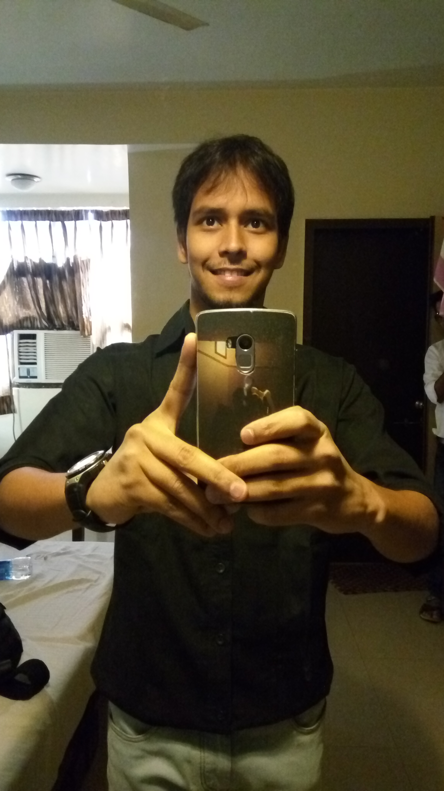
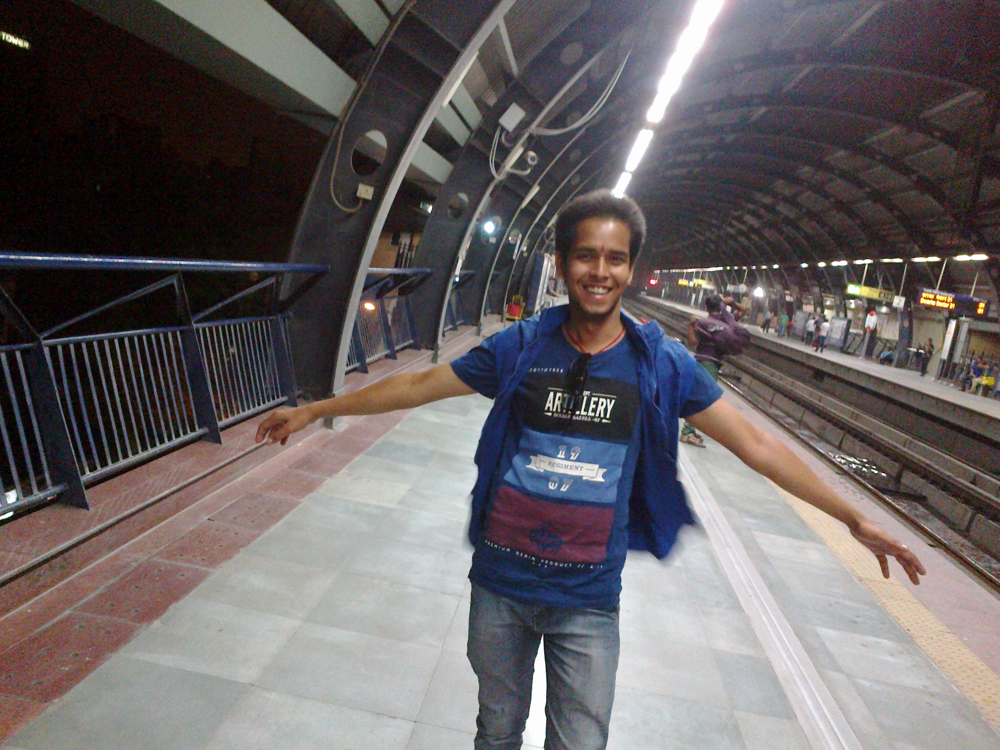
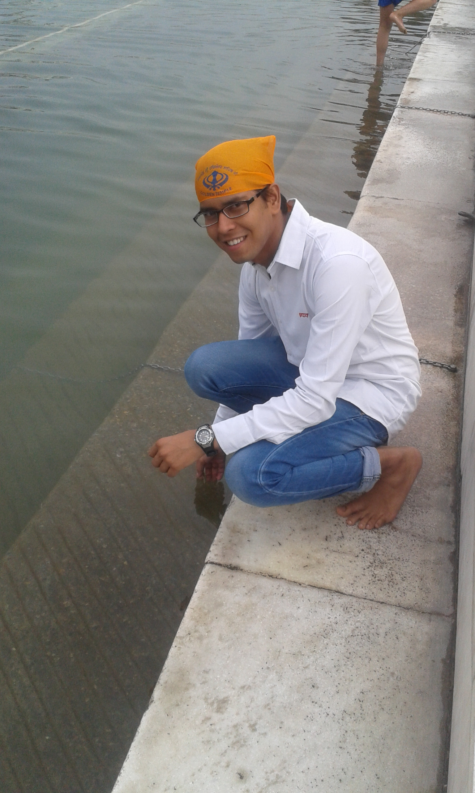
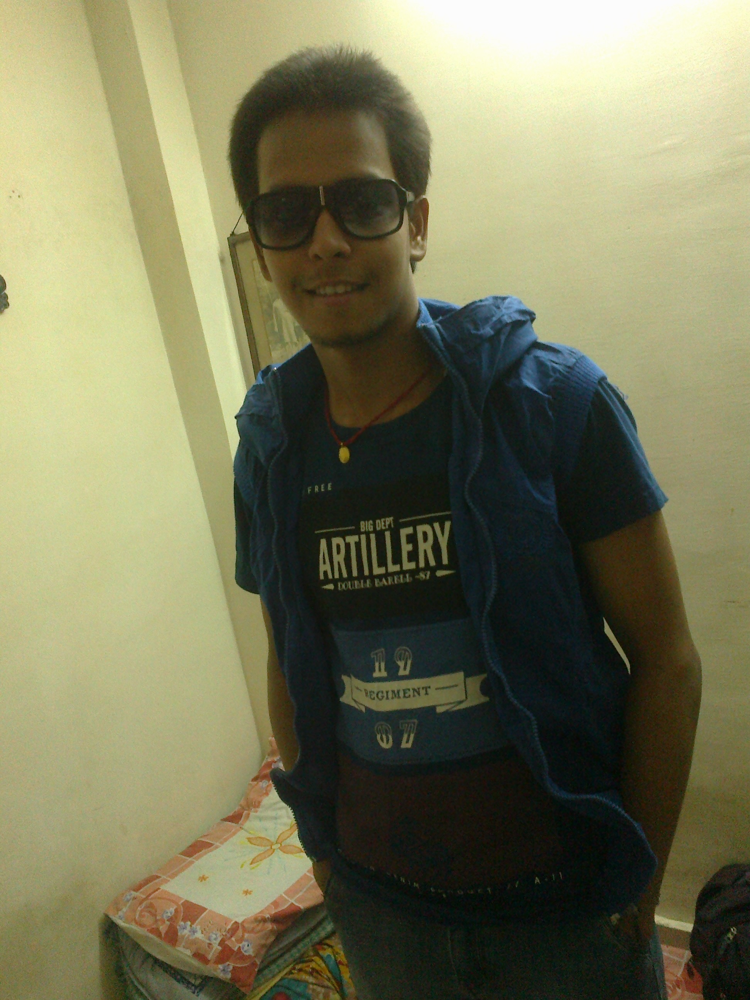

VIKASH ANAND





VIKASH ANAND
Satya Deo Ganj, Nalband Toli, Buxar-802101
E-mail: vikashanandgupta95@gmail.com
Mob: 9871544549
LinkedIn:
https://www.linkedin.com/in/vikash-anand-139aab131/
GitHub:
https://github.com/vikashanandgupta
Personnel Information
- Name:- Vikash Anand
- Father's Name:- Nirmal Kumar Gupta
- Mother's Name:- Maya Devi
- Siblings Name:- Nidhi Kumari & Anjali Kumari
- Sex:- Male
- D.O.B:- 24th Feb 1995
- Nationality:- Indian
- Language Known:- Hindi & English
- Qualification:- B.Tech (4th year Pursuing)
- Marital Status- Unmarried
- Hobbies:- Playing with Rubik's Cube
- School Best Friend:- Aakash Raj, Aamir Raza, Pradeep Rai, Shreya Garhwalia, Ishita Pandey, Juhi Chaudhary
- College Best Friend:- Anand, Swapnil, Pradosh, Shakti, Sudhir, Satyam, Shubham, Srijan